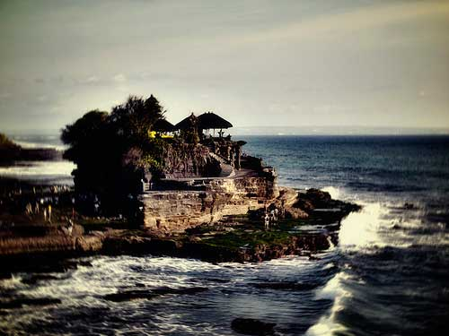
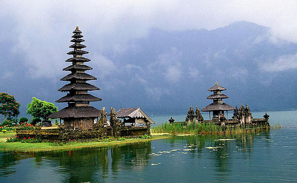
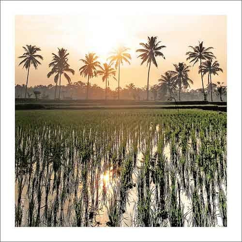
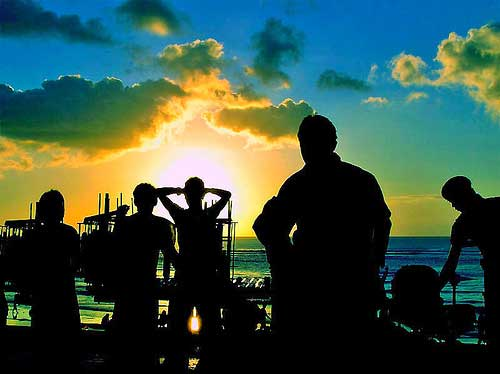
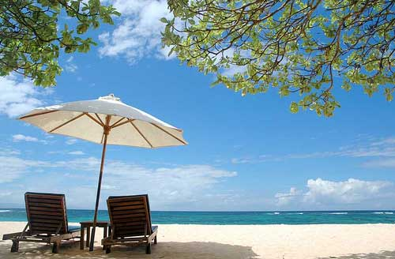
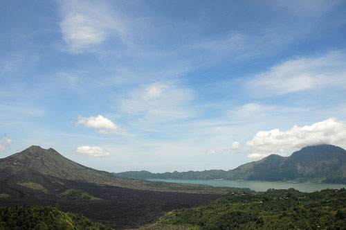

Stunning beaches, sand between the toes, and palm trees overhead. Do we need more? Bali, Indonesia is the intersection of affordablability and luxury. Come. Relax. Enjoy the spirit of BALI.
One of the most important Balinese Festivals, this is a celebration of the victory of good over evil. Honouring the creator of the universe, during this 10 day celebration the Balinese show their gratitude to the creator and their ancestors
Imagine a large rugged limestone cliff with a temple perched on it, almost like a scene from cliffhanger, to add to it’s dramatic grandeur. It is situated in the island commonly known as Bukit Peninsula, where it also include Bali’s few best beaches like Balangan and also has many good surfing spots.
Another majestic rock formation that lays as a foundation of a popular pilgrimage temple. It is most popular for its serenity and cultural significance as it is associated with the Balinese mythology as one of the seven temples that form a ring in the southwest of Bali. Try to go there during low tide so that you can experience walking across the water to the temple for the full experience.
This is the famous temple by the lake in Bali, where instead of like the rest perching on the cliff rock, this one is serenely resting at the edge of Lake Bratan. Imagine beautifully structured temple with double the beauty due to reflections of the clear lake.
Yes despite that one might be trying to escape the eat, pray, love trail, Ubud is one place you cannot miss. It is still the heart of Bali, where all the action is and all the people and energy are focused on. Ubud is packed and condensed with the best of Bali, ranging from nature, culture and people, temples, museums, rolling rice/paddy fields and man-made gardens and parks.
Kuta is the most popular beach in Bali, which means you can be sure to find the life and party scene here in Kuta Beach. Head here if you are looking out to socialize, party and have a good time. You be sure to find a range of places for different atmosphere and budget, ranging from Hard Rock cafe to your neighborhood cafe and pub.
If you have a bit more of a budget to spare, splurge at Nusa Dua beach, where it is dotted with higher end hotels. You will be rewarded with private pristine beaches for you to slowly soak in the sun and the sea. Also ideal for honeymooners or people looking out for a private and relaxing getaway.
